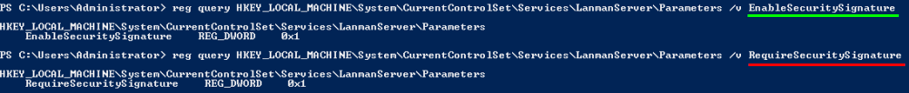
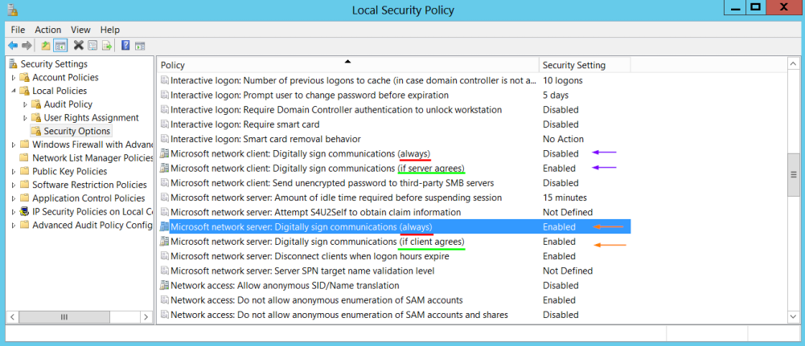
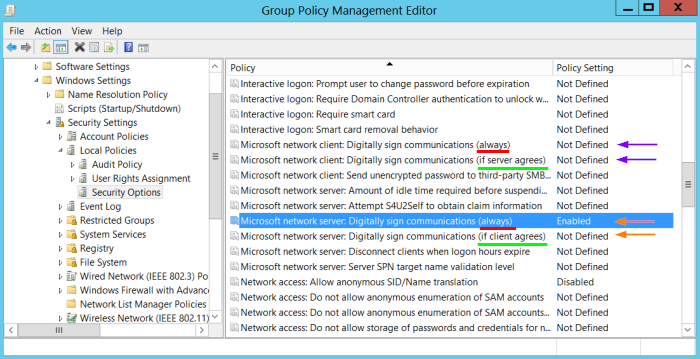
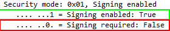

NTLM relay attacks using SMB
NTLM
relay attacks using SMBWhen we relay attempted NTLMv2 authentication against our machine to another
Target System(
instead
of extract from pcap file and crack it) in order to obtain unauthorized access to this Target System.
◇
PROS and CONS of Enable SMB signing ▪ PROS: The attacker
cannot more success in a NTLM relay attack.
This beccause SMB signing is used after the Authentication
process, when the Session is been created. This mean that Attacker during a Session, if SMB signing is enabled must
sign its requests/packets, but because the Attacker do not know the secret of the Client cannot sign the packets and
the Server will reject the attacker’s request. So you understand that if packets must necessarily be signed after
authentication, then the attacker can no longer operate, since he has no knowledge of the client’s secret. So the
attack will fail.
▪ CONS(enabled):
- can impose up to a 15%
performance degradation on file service transactions(
source)
- if NTLM is still used in the network SMB should remain disabled, otherwise it could break compatibility with
third-party software.
◇
How to Enable SMB signing SMB
signing is enabled(
require SMB signing) by default only on
Domain Controllers but we can be enable it on
Windows
Client as well. This mean that when the
Domain Controller acts as an
SMB server,
SMB signing is required, but if a connection comes from the domain
controller to a server, SMB signing is not required.
The screenshots below is taken in fact from a
Domain Controller.
▪ Edit values of Local Security Policy through registry
values:
PS> reg query HKEY_LOCAL_MACHINE\System\CurrentControlSet\Services\LanmanServer\Parameters /v EnableSecuritySignature
PS> reg query HKEY_LOCAL_MACHINE\System\CurrentControlSet\Services\LanmanServer\Parameters /v RequireSecuritySignature
 ▪ The same settings can be
found Local Security Policy :
Control Panel → Administrative Tools → Local Security Policy → Security Settings
→ Local Policies → Security Options

▪ On the
Domain Controller if we want to apply settings to all the Domain we can
go in Group Policy Management Editor, this will change the Local Security Policy of all the computers in the domain
but NOT to the Domain Controller itself:
Control Panel → Administrative Tools → Group Policy management →
Default Domain Policy (right click edit) → Computer Configuration → Policies → Windows Settings → Security Settings
→ Local Policies → Security Options

Note: if we want to change the settings on the Domain Controller we have to change the settings on Local Security
Policy of the Domain Controller
◇
We can find these parameters in the
packets sent and received ▪ Negotiation phase:
▪ Authentication phase:
